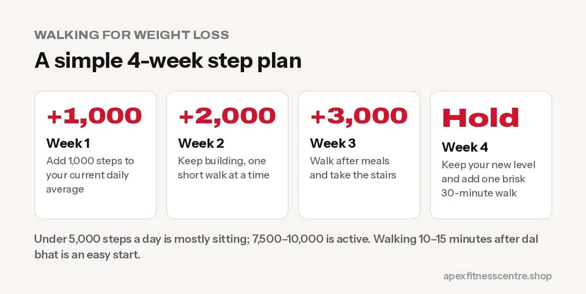

Walking for Weight Loss: How Many Steps a Day Do You Really Need?
Is 10,000 steps a day necessary? What research says about daily steps, walking for weight loss, and easy ways to walk more in Nepal.

Walking is the most underrated weight loss tool. It is free, easy on the joints, and you can do it every day. For health, research suggests most of the benefit comes at around 8,000 to 10,000 steps a day for adults under 60 and 6,000 to 8,000 steps for those over 60. For weight loss, more walking helps, but your diet still decides most of the result.
Is 10,000 steps a day a real target?
The famous 10,000-step goal started as a marketing slogan, not a scientific finding. But research has since looked at steps and health.
A large analysis of 15 studies, published in The Lancet Public Health in 2022, found that the risk of early death fell as daily steps increased, levelling off at about 8,000 to 10,000 steps a day for adults under 60 and 6,000 to 8,000 for adults 60 and over (summary).
So 10,000 is a good round number to aim for, but any increase from where you are now is worthwhile.
How walking helps weight loss
- Burns extra energy every day without making you as hungry as hard workouts often do.
- Easy to keep up for years, which is what long-term weight loss needs.
- Walking after meals may help with blood sugar control.
- Reduces stress, which helps with emotional eating.
As a rough idea, walking burns more energy the heavier you are and the faster or steeper you walk. A brisk 30 to 45 minute walk every day adds up to a meaningful amount over a week.
How many steps are you taking now?
Most phones count steps automatically (Google Fit, Samsung Health, Apple Health). Check your average for the last week:
| Average daily steps | What it means |
|---|---|
| Under 5,000 | Mostly sitting. Big room for improvement |
| 5,000–7,500 | Somewhat active |
| 7,500–10,000 | Active |
| Over 10,000 | Very active |
A simple 4-week walking plan
Add steps gradually from your current average:
| Week | Goal |
|---|---|
| Week 1 | Your current average + 1,000 steps |
| Week 2 | + 2,000 |
| Week 3 | + 3,000 |
| Week 4 | Hold, and add one brisk 30-minute walk |

12 easy ways to walk more in Nepal
- Walk after dal bhat for 10 to 15 minutes, morning and evening.
- Get off the micro or tempo one stop early.
- Take the stairs instead of the lift.
- Walk to the local shop instead of riding the scooter.
- Walk while on phone calls.
- Morning walk with a friend or family member, it keeps you accountable.
- Weekend hikes to local hills and temples.
- Walk your children to school.
- Park farther away at shopping centres.
- Set a reminder to stand and walk 5 minutes every hour at work.
- Walk to the gym if it is close.
- Use a treadmill on incline on rainy monsoon days.
Walking vs running for weight loss
Running burns more energy per minute, but walking is easier to do every day, with less injury risk. For many people, especially beginners or those with more weight to lose, daily brisk walking beats occasional running.
The best combination for most: daily walking + strength training 2 to 3 times a week + a sensible diet. See our weight loss diet plan with Nepali food.
Frequently asked questions
Can I lose weight just by walking?
Yes, if walking creates a calorie deficit together with your diet. Walking alone, without changing food, often gives slow results.
Is it better to walk in the morning or evening?
Whichever you can do consistently. Walking after meals has extra benefits for blood sugar.
How fast should I walk?
Brisk enough that you breathe faster but can still talk in short sentences.
Is 30 minutes of walking a day enough?
It is a great start and covers a large part of the WHO’s weekly activity recommendation. More is better for weight loss.
Sources
- Mortality benefit from higher daily steps plateaus (Hospital Healthcare Europe)
- WHO fact sheet: physical activity (World Health Organization)
- WHO fact sheet: obesity and overweight (World Health Organization)
General information, not medical advice.
General information, not medical advice. Ask a doctor if you have a health condition. Results vary from person to person.
Comments
Loading comments…